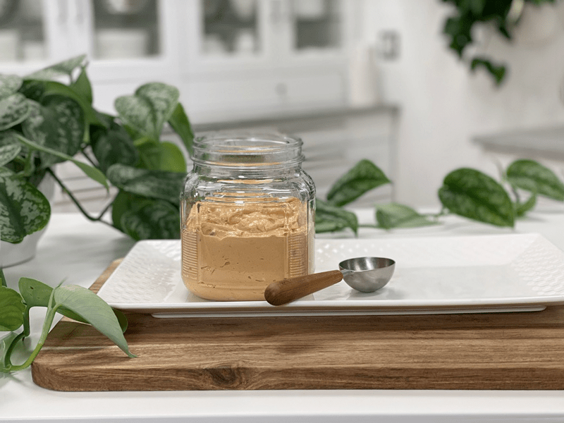

Vegan Chunky Thousand Island Dressing
– raw, vegan, gluten-free –
I knew I needed a Thousand Island Dressing when I decided to create a Raw Reuben Sandwich finally. Making one of these has been on my “OMGosh-I-am-craving-a-Reuben-sandwich-if-I-walk-past-another-restaurant-making-those-I-am-going-to-die!” list. They smell just heavenly to me. I have so many lists of dishes that I want to create. Over time I am slowly scratching them off as I recreate my raw, whole food, versions.

So onward… Thousand Island it is!! So what the heck goes into making this famous dressing? I remember watching my dad create some concoction of ketchup, mayo, and pickles? Was that it? I don’t know; I didn’t pay that close attention.
Even though that may have seemed like making it from scratch, it is a lot different when converting to raw because you REALLY have to make recipes from scratch. Therein lies the fun challenges. So, I Googled and saw that the Wishbone Brand used the following ingredients…
INGREDIENTS: Water, Corn Syrup, Sweet Pickle Relish (Cucumbers,Corn Syrup, Sugar, Distilled Vinegar, Salt, Onions, Spice, Pepper,Alum, Calcium Chloride, Natural Flavors, Polysorbate 80, Turmeric), Tomato Paste, Sugar, Soybean Oil, Distilled Vinegar, Contains Less than 2% of Egg Yolk, Salt, Natural Flavors, Modified Food Starch, Garlic Powder, Onion (Dehydrated), Spice, Xanthan Gum,Carrageenan, Coloring, Phosphoric Acid, Lactic Acid, Sorbic Acid,Sodium Benzoate, Calcium Disodium EDTA (to Preserve Freshness), Tocopheryl Acetate (Vitamin E).
Holy Rust Buckets Batman! Haha, I can’t tell you which Batman movie that came from or who the actor was playing that role, the only thing I walked away remembering was that phrase. Sometimes it comes in handy, especially during moments like these. I encourage you to make this recipe and then share with me the first words that come out of your mouth… remember this is a family-friendly site. :)
 Ingredients:
Ingredients:
Yields 3 3/4 cups
- 1 cup raw cashews, soaked 2 +hours
- 1/2 cup (38 g) sun-dried tomatoes, rehydrated in 3/4 cup warm water
- 1/4 cup (58 g) water
- 5 Tbsp (60 g) lemon juice
- 2(38 g) Medjool dates, pitted
- 1 tsp (7 g) Himalayan pink salt
- 1 tsp (3 g) onion powder
- 1/2 tsp (1 g) garlic powder
- 2 Tbsp (21 g) raw apple cider vinegar
- 1/4 cup (65 g) extra-virgin olive oil
- 1/2 cup (75 g) red onions, chopped
- 1/2 cup (85 g) sweet pickle, chopped
Preparation:
- After soaking the cashews, discard the soak water and place it in a high-powered blender.
- Rehydrate the sun-dried tomatoes by placing them in enough hot water to cover. Soak for 10+ minutes or until soft. See #4.
- Add the water, lemon juice, dates, salt, onion powder, garlic powder, and vinegar. Blend until creamy smooth.
- You shouldn’t detect any grit. If you do, keep blending till it is creamy smooth when you rub it between your thumb and finger.
- This can take 1-3 minutes, depending on the machine.
- Add the sun-dried tomatoes and soak water, and blend long enough to break down the tomatoes into small flecks.
- While continuing to blend and a vortex is created in the mixture, add oil in a steady stream until emulsified. Transfer to a bowl.
- Stir in the onions and pickle.
- Store in a tightly sealed container the fridge for up to 2 weeks.